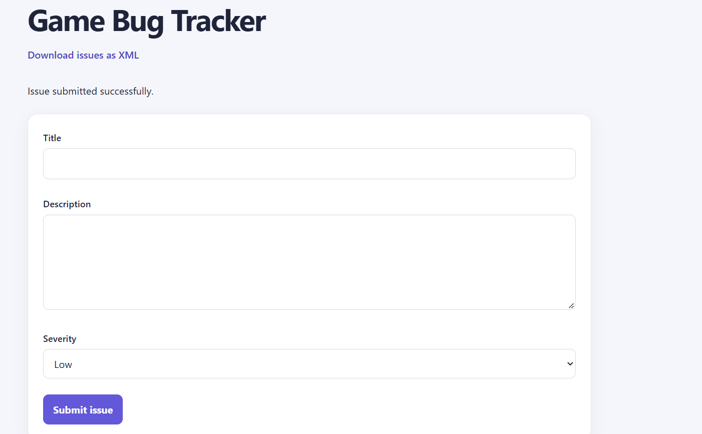
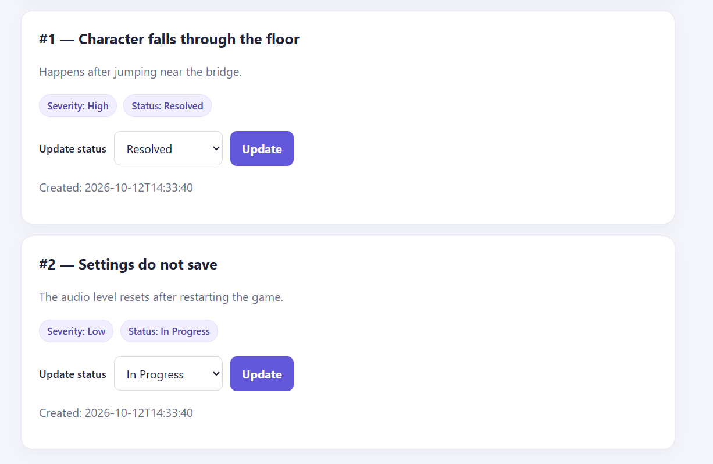

Issue Reporting
Submit a Bug Report
The form collects a bug title, description, and severity before saving the report to the issue tracker.
Featured Project
A Java web application for submitting game bug reports, tracking their status, and exporting saved issues as XML. Issues are stored in MySQL using JDBC.
Create a database-backed issue tracker where game bugs can be reported, reviewed, and followed through to resolution.
I built a Java web application that saves issues to MySQL. Users can submit a title, description, and severity; view saved reports; change an issue's status; and download the issues as an XML file.
I built the application from setup through implementation, including its database connection, data-access methods, servlet routes, JSP interface, input validation, status updates, and XML export.
Making sure the app could connect to MySQL and that the JDBC driver was available when the application ran on Tomcat.
Added MySQL Connector/J as a Maven dependency, configured the application to use the driver, and kept the database credentials in Tomcat's environment settings rather than in the source code.
Ensuring that changing an issue's status updates only the selected database record and rejects invalid values.
Validated the submitted issue ID and status on the server, then
used a prepared SQL update with the issue ID in the
WHERE clause.
A look at the issue dashboard and its saved reports.

Issue Reporting
The form collects a bug title, description, and severity before saving the report to the issue tracker.

Issue Dashboard
The dashboard displays saved bug reports and provides controls for submitting issues and updating their status.
The application runs locally with MySQL and Apache Tomcat. Visit the GitHub repository for the source code and setup instructions.